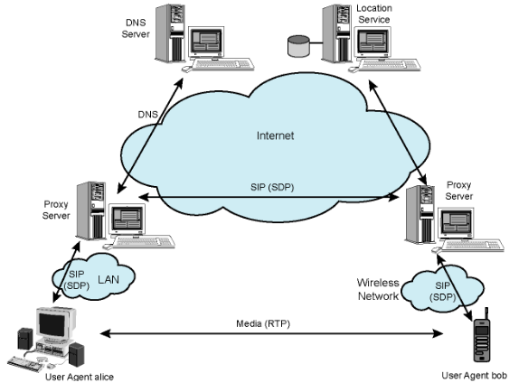
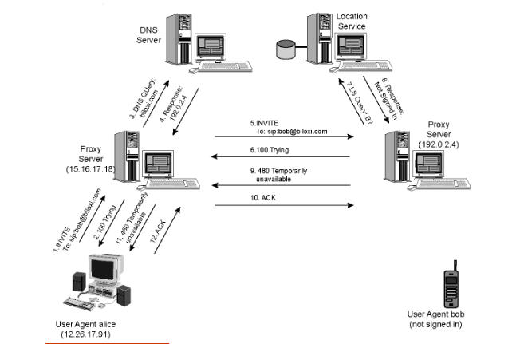
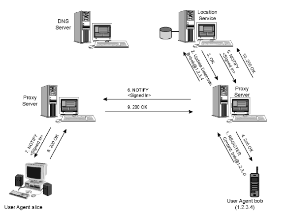
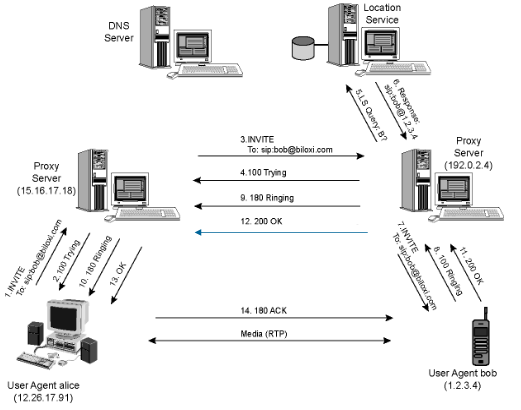

Signaling Protocols (SIP - Session Initiation Protocol)
NOTA:
Para ser mais fácil designar ambas as partes, definir-se-á o seguinte padrão nas próximas linhas deste documento.
- Chamador: pessoa que pretende efetutar uma chamada;
- Chamado: pessoa que irá receber a chamada.
Motivação
- É necessário:
- Criar e gerir sessões entre aplicações;
- Gerar o comportamento e práticas de utilizadores heterogéneos (mobilidade, diferentes dispositivos e IDs/nomes).
- Visão a longo-prazo do SIP:
- Todas as chamadas telefónicas e conferências por vídeo vão ser na Internet;
- As pessoas serão identificadas pelos seus nomes ou emails, ao invés de número de telemóvel;
- Podemos alcançar a pessoa a quem queremos ligar, independentemente da sua localização ou dispositivo IP que esteja a usar.
Session Initiation Protocol
- Um protocolo de controlo da camada aplicacional (de sinalização) para criar, modificar e terminar sessões com um ou mais participantes;
- Trabalha com protocolos de multimédia em tempo real, permitindo que os diversos endpoints (chamados user agents) se conectem uns aos outros e cheguem a acordo na caracterização da sessão que pretendem partilhar;
- Para localizar possíveis participantes na sessão e outras funções, o SIP permite a criação de uma infraestrutura de hosts na rede (chamados proxy servers) para os quais os user agents podem enviar registos, convites para sessões e outros pedidos;
- Funcionalidades:
- Localização do Utilizador: encontrar a localização atual de um utilizador. Os utilizadores podem aceder às funcionalidades da aplicação de forma remota;
- Disponibilidade dos Utilizadores: determina a disponibilidade de um utilizador para comunicar;
- Capacidade dos Utilizadores: determina os mídia e os parâmetros a serem utilizados para comunicar;
- Configuração de Sessão: estabelece os parâmetros para uma sessão ponto-a-ponto e multiparty calls;
- Gestão de Sessão: transferência e término de sessões, alteração dos seus parâmetros e chamada de serviços.
- Para a configuração de uma chamada, o SIP providencia mecanismos:
- Para o chamador informar o recetor que alguém pretende estabelecer uma chamada com ele;
- Para que o chamador e o chamado concordem no tipo de mídia e no encoding;
- Para terminar uma chamada.
- Determinar o endereço de IP atual do chamado:
- Mapeia o identificador da mnemónica para o endereço IP atual.
- Gestão de chamadas:
- Adiciona novas streams de mídia durante a chamada;
- Altera o encoding durante a chamada;
- Convida outros utilizadores;
- Transfere ou coloca chamadas em espera.
- O SIP Uniform Resource Identifier (URI) é semelhante a um endereço de email:
sip|sips:user:password@host:port;uri-parameters?headers;sip: bob@domain.com.
- Baseado no modelo de transação pedido/resposta do HTTP;
- Utiliza maior parte dos cabeçalhos, regras de encoding e códigos de estado do HTTP;
- Formato legível para mostrar informação;
- Utiliza o conceito de pesquisas DNS recursivas e iterativas;
- Incorpora o SDP (Session Description Protocol).
- Define os conteúdos da sessão utilizando tipos semelhantes ao MIME (extensões email).
- Providencia primitas de serviços, não serviços;
- É um componente independente que pode ser utilizado com outros protocolos IETF (RTP, RTSP, SDP, etc...) para completar uma arquitetura multimédia;
- Pode correr em TCP, UDP, DCCP, SCTP, RTP/RTCP, etc...
- Compreender 4 tipos de entidades lógicas: user agent, redirect server, proxy server e registrar.
Componentes e Protocolos
- Cliente:
- Envia pedidos e recebe respostas;
- Clientes user agent e proxies são clientes.
- Servidor:
- Recebe pedidos e envia respostas;
- Proxies, servidores user agent, servidores de redirecionamento e registrars;
- User Agent:
- Em todas as estações terminais do SIP.
- User Agent Client (UAC): Levanta pedidos;
- User Agent Server (UAS): Recebe pedidos e responde.
- Em todas as estações terminais do SIP.
- Redirect Server:
- Redireciona o cliente para contactar um conjunto alternativo de URIs;
- Semelhante a pesquisas iterativas no DNS.
- Proxy Server:
- Servidor e Cliente;
- Faz pedidos a outros clientes.
- Faz o routing e força a aplicação de políticas nas chamadas;
- Semelhante a pesquisas recursivas no DNS.
- Registrar:
- Servidor que aceita pedidos
REGISTER; - Coloca a informação que recebe em pedidos na localização do serviço para o domínio.
- Endereço SIP, endereço IP do dispositivo associado, estado...
- Servidor que aceita pedidos
- Localização do Serviço:
- Utilizado pelo redirecionamento ou pelos proxy servers para obter informações acerca da possíveis localizações do chamada;
- Mantém uma base de dados do mapeamento dos
SIP-address\( \rightarrow \)IP-address.

Mensagens
Requests
- Vejam-se os seguintes exemplos de métodos:
- REGISTER: notifica a rede SIP dos endereços IP e URIs dos quais gostaria de receber chamadas;
- INVITE: estabelece a sessão entre os user agents;
- ACK: confirma a troca fiável de mensagens;
- CANCEL: termina o pedido em curso, mas não desfaz a chamada completa;
- BYE: termina a sessão entre utilizadores numa conferência;
- OPTIONS: solicita informações acerca das capacidades do chamado;
- etc...
Response
- PROVISIONAL (1xx): Pedido pedido e a ser processado;
- SUCCESS (2xx): Ação recebida, compreendida e aceite;
- REDIRECTION (3xx): Preciso ação futura;
- CLIENT ERROR (4xx): O pedido contém má syntax ou não pode ser completado por este servidor;
- SERVER ERROR (5xx): Servidor não conseguiu processar um pedido aparentemente correto;
- GLOBAL FAILURE (6xx): Pedido não foi completado em nenhum servidor.
Tentatia de Início de Chamada

Notificação

Início Bem Sucedido
